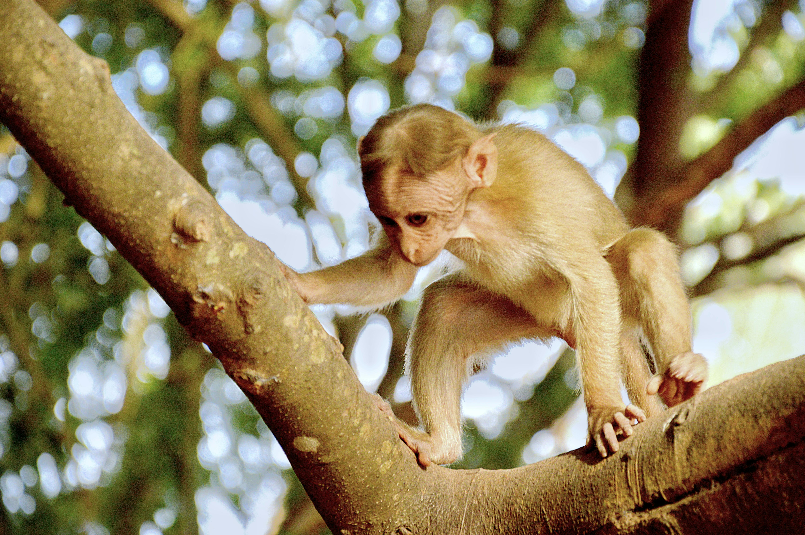

There are many types of animals:
Living with cats is a delightful experience that requires understanding their unique needs and behaviors. Provide a safe, comfortable space with cozy bedding and ensure they have access to fresh water, nutritious food, and a clean litter box. Cats love enrichment, so offer toys, scratching posts, and interactive play to keep them mentally stimulated and physically active. Respect their independence, but also build trust with gentle interactions, slow blinks, and cuddles when they seek affection. Regular grooming, vet checkups, and a cat-friendly home environment will help ensure a happy, healthy life for your feline companion.
Living with dogs is a rewarding experience that requires love, patience, and care. Dogs thrive in a safe, comfortable environment with access to fresh water, nutritious food, and regular exercise. Providing them with a cozy bed, stimulating toys, and positive training helps keep them physically and mentally healthy. Understanding their body language—such as wagging tails for happiness or tucked ears when anxious—can strengthen your bond. Regular vet checkups, grooming, and socialization are essential for their well-being. Most importantly, dogs need your time and affection, as they are loyal companions who thrive on companionship and routine.

Living with birds can be a delightful and enriching experience, as they are intelligent, social, and often playful companions. To ensure their well-being, provide a spacious cage with natural perches, toys, and plenty of room to spread their wings. A healthy diet includes seeds, pellets, fresh fruits, and vegetables, along with constant access to clean water. Birds thrive on interaction, so spend quality time with them daily and offer mental stimulation through games, training, or talking. Keep their environment clean, maintain a comfortable temperature, and schedule regular vet checkups. With proper care, birds can become loyal, affectionate, and entertaining companions.

Living with monkeys is a unique and challenging experience that requires significant time, effort, and resources. Monkeys are highly intelligent, social, and active animals that need constant mental and physical stimulation. Providing a spacious and enriched environment with climbing structures, toys, and puzzles is essential to keep them engaged. Their diet must be balanced, including fresh fruits, vegetables, and specialized monkey chow, along with fresh water. Monkeys require social interaction and can form strong bonds, but they also need consistent training and handling. Regular vet checkups and specialized care are crucial for their health. Keep in mind that monkeys are wild animals with complex needs, so their care requires deep commitment and understanding.
